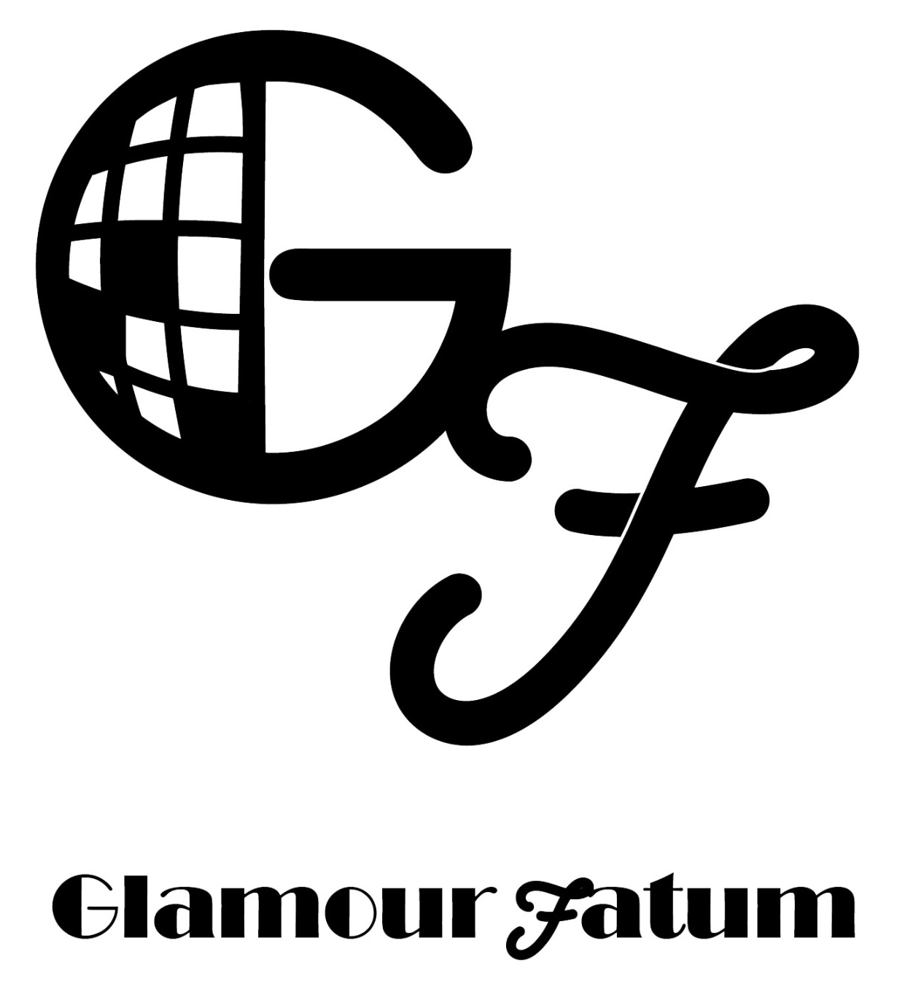
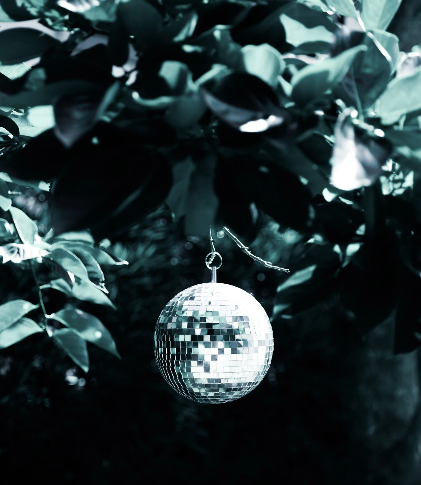
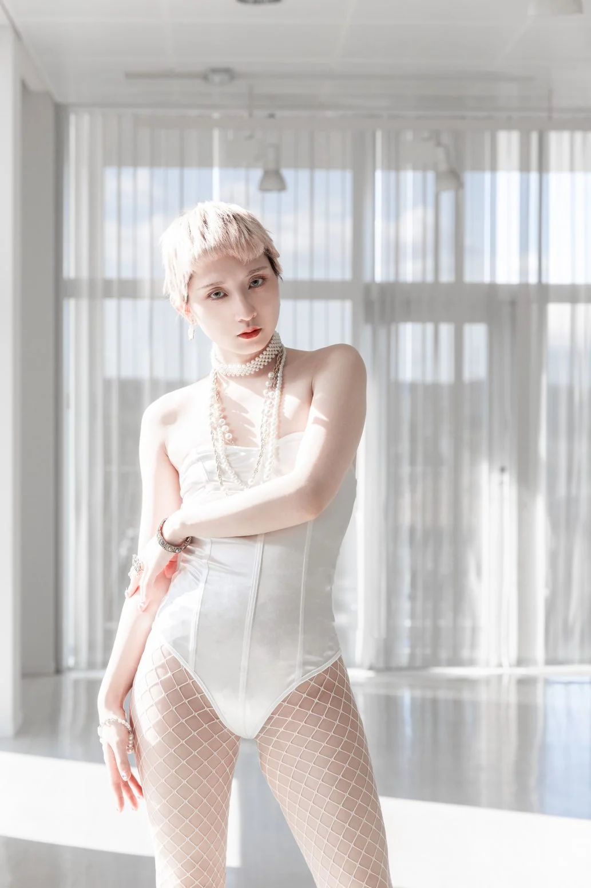
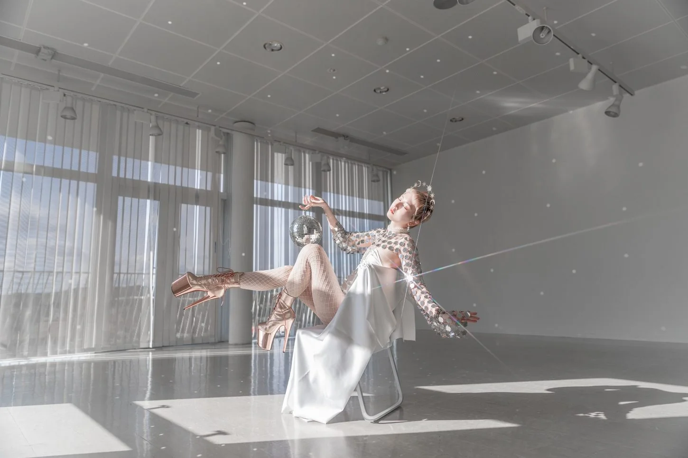

MAISON / THE ART OF BEING SEEN

美しさは、運命。
BEAUTY IS DESTINY.
THE ORIGINAL BEAUTY OF EVERY WOMANSCROLL TO EXPLORE ↓
01 / OUR PHILOSOPHYGLAMOUR FATUM / THE MAISON
THE PHILOSOPHY
すべての女性は、
美しい。
美しさと運命の交錯をテーマに、
完璧な美を追求する。
Glamour Fatumは、「すべての女性は美しい」という信念のもと、纏う人が自らの美しさを見つけ、自信を持って輝くことができる世界を目指している。
大胆で華麗なビジョン。斬新なデザインと、輝きを放つ装飾。そのひとつひとつが、女性たちの個性と存在感を鮮やかに引き立てる。
ただ美を追い求めるだけではない。その服を纏うことで、誰もが「運命の美しさ」に出会い、自分自身の新たな魅力に気づいてゆく。
まるで、その美しさが
はじめから定められていたかのように。

THE ART OF SHINING,
IN YOUR OWN WAY.
02 / THE FACESTwo faces.
Two faces.
One maison.
異なる光を宿す、ふたりの存在。
ひとつの美学を、さまざまな表情へ。


03 / COLLECTIONSThe light,
The light,
in every form.

2027 / 10TH ANNIVERSARY SHOW
HOLOGRAM
無数の光を重ね、ひとつの美しい輪郭を描く。クリスタルとスパンコールが映す10周年の輝き。2027年1月31日、ファッションショー開催。
EXPLORE HOLOGRAM
COLLECTIONS / 2023 — 2027
COLLECTION
COLLECTION
ARCHIVE
時代とともに重ねてきた、美の軌跡。
Glamour Fatumの歴代コレクションをご覧ください。
THE NEXT
REFLECTION.
次期コレクション、2028年初春公開決定。
新しい光の全貌は、後日公開。
VIEW PREVIEW